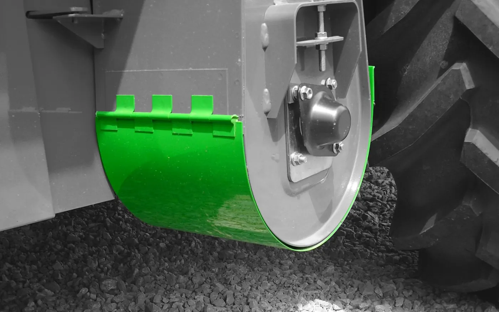
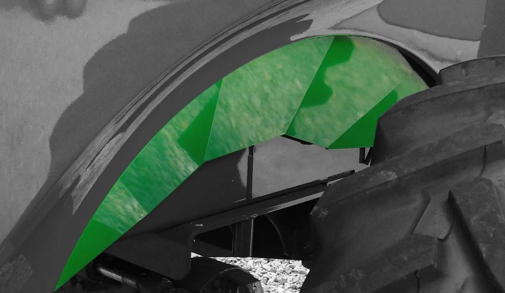
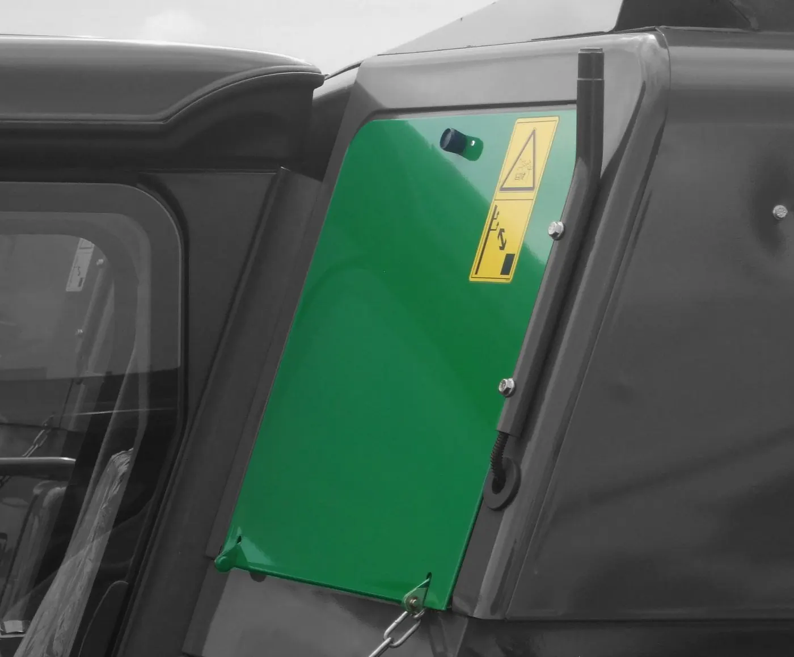

Unser Blech sitzt an Maschinen, die arbeitenLand- und Baumaschinenbau
Wir fertigen Metallteile für den Land- und Baumaschinensektor: Prototypen, kleine Serien und komplette Baugruppen inklusive Montage.
Wir fertigen Prototypen, kleine Serien und komplette Baugruppen inklusive Montage mit allen DIN- und Normteilen.
Aus dem Leitbild der Weber Metallbau GmbH
Teile, die längst im Einsatz sind
Farbig ist jeweils das, was aus unserer Halle kommt. Der Rest ist die Maschine, an der es sitzt. Bei Land- und Baumaschinen ist unser Blech oft das erste, was ein Fahrer anfasst.







Gekennzeichnet, auf der Palette, raus.
Jedes Teil verlässt die Halle so, wie Ihr Lager es braucht. Versand geht in ganz Deutschland, abgeholt wird genauso oft.
Spezialisiert auf Land- und Baumaschinen
Unsere Teile sitzen dort, wo es rau wird: an Aufstiegen, Verkleidungen, Konsolen und Auslegern. Das prägt, wie wir arbeiten — Blechdicken, die tragen, Kanten, die halten, und Maße, die auch beim zwanzigsten Teil noch stimmen.
- LandmaschinenbauVerkleidungen, Aufstiege, Halterungen und Anbauteile
- BaumaschinenbauKonsolen, Schutzbleche und Baugruppen am Ausleger
- Maschinen- und AnlagenbauRahmen, Gehäuseteile und Zuschnitte nach Zeichnung
- PrototypenbauEin Teil zum Probieren, bevor die Serie freigegeben wird

- ISO 9001:2015Zertifiziert durch die GTÜ — Prüfungen begleiten die Fertigung, sie kommen nicht erst am Ende.
- ErstteilprüfungDas erste Teil wird gemessen, bevor die Serie durchläuft.
- Abgelegte ProgrammeNachbestellungen laufen ohne neue Einrichtzeit.
- FertigungstiefeVom Zuschnitt bis zur montierten Baugruppe im eigenen Haus.
Welches Teil sitzt als Nächstes an Ihrer Maschine?
Schicken Sie uns die Zeichnung. Wir sagen Ihnen, ob wir es fertigen können und zu welcher Stückzahl es passt.
Oder direkt anrufen: 08772 803707